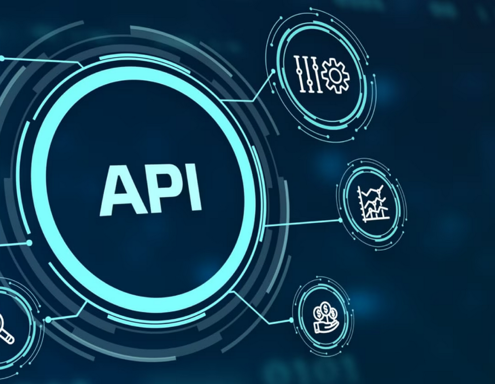

<section id="projects" class="projects main-section">
    <div class="main-container">
        <h2 class="heading-secondary projects__heading-secondary">
            <!-- <span class="heading-secondary__sm"> Projects 🛠️</span> -->
            <span class="heading-secondary__main">
                Some of my recent projects.
            </span>
        </h2>
        <div class="main-section__content">
            <div class="projects__list">
                <div class="projects__list-item">
                    <div class="projects__list-item-count">
                        <span class="projects__list-item-count-num"> 1 </span>
                        <span class="projects__list-item-count-line"> </span>
                        <span class="projects__list-item-count-end-dot"> </span>
                    </div>
                    <div class="projects__list-item-details">
                        <div class="projects__list-item-img-cont">
                            
                        </div>
                        <h3 class="heading-tertiary projects__list-item-heading-tertiary">
                            Terraform - Cloud Infrastructure
                        </h3>
                        <!-- <hr class="projects__title-text-divider" /> -->

                        <p class="text-primary projects__list-item-text-primary">
                            <span>
                                I joined a newly established team consisting of 2 consultants and 3
                                permanent employees. The team’s purpose was to develop reusable and scalable cloud
                                infrastructure
                                solutions to efficiently serve the organization and its collaborators. The company was
                                structured as a
                                traditional IT organization with separate development and operations departments, each
                                with distinct
                                focuses, work methods, and systems, occasionally posing challenges to cross-departmental
                                collaboration.

                                The technical aspect of the project involved designing and building an Azure cloud
                                infrastructure
                                foundation applicable to all existing and future cloud solutions. The solution adhered
                                to the
                                company’s platform specifications, combined with Microsoft’s Hub & Spoke topology model
                                and best
                                practices. The solution was built using Terraform modules, versioned in GIT, and
                                documented in
                                Confluence. Beyond the technical aspect, there was a focus on enhancing transparency and
                                optimizing
                                collaboration between departments.

                                Methods and tools promoting a DevOps culture were implemented to encourage communication
                                and
                                collaboration. Additionally, there was a desire to establish an internal Terraform
                                community for
                                knowledge-sharing, collaborative work, and responsibility for Terraform modules within
                                the company In
                                the initial phase of the project, as a DevOps Engineer, I wrote Terraform code for the
                                Azure cloud
                                infrastructure and utilized my experience in Azure to assist with architectural
                                decisions. Later, as
                                the infrastructure components were completed, I played a hands-on role in the
                                implementation of the
                                first of many new infrastructure projects in Azure. Along the way, I authored
                                documentation,
                                facilitated knowledge-sharing, and presented solution overviews. To optimize
                                collaboration between
                                departments, I established a service catalog with standard request forms and
                                corresponding Standard
                                Operational Procedure descriptions, outlining the services offered, how to request them,
                                and their
                                delivery procedures. To fulfill the goal of creating a Terraform community, I onboarded
                                2 consultants
                                and 2 permanent members to the community, utilizing pair-programming to build the
                                initial
                                community-owned Terraform modules alongside developers.

                                Our solutions meet the company’s requirements for functionality, security, and
                                scalability, based on
                                Microsoft’s Hub & Spoke network topology model with Network Security Groups for
                                micro-segmentation,
                                Azure Firewall for network traffic inspection and filtering, and Web Application
                                Firewall for
                                protecting web services against OWASP vulnerabilities. The solution has been implemented
                                and deployed
                                in several projects in Sweden, America, and Canada, with two new deployments underway in
                                Holland and
                                Singapore. Implementation times for new regions have gradually decreased from months to
                                weeks and now
                                to days.
                                Collaboration between departments has improved as information has become easily
                                accessible and
                                processes are well-documented. The community effort has created awareness of the
                                department’s
                                existence and purpose while contributing to the development and maintenance of Terraform
                                modules.
                            </span>
                            <!-- <br />
                  <br /> -->
                            <span>
                                Date: March 2024
                                Client: N1 A/S
                            </span>
                        </p>
                        <!-- <button class="btn btn-theme projects__btn-theme">
                Live Link
              </button>
              <button class="btn btn-inv projects__btn-inv">Code Link</button> -->
                    </div>
                </div>
                <div class="projects__list-item projects__list-item--inv">
                    <div class="projects__list-item-details">
                        <div class="projects__list-item-img-cont">
                            
                        </div>
                        <h3 class="heading-tertiary projects__list-item-heading-tertiary">
                            API - Integration Platform
                        </h3>
                        <!-- <hr class="projects__title-text-divider" /> -->

                        <p class="text-primary projects__list-item-text-primary">
                            <span>
                                I was engaged to architect and deploy Azure infrastructure components utilizing
                                Terraform to
                                facilitate API integrations for an energy project. This assignment entailed constructing
                                a robust
                                foundation to support seamless communication and data exchange across various systems
                                and
                                stakeholders. The project required expertise in Azure services such as Azure API
                                Management, App
                                Service, Docker, Azure Container Registry, Azure Key Vault, Storage Account, and Service
                                Bus.

                                The primary task involved designing and implementing Azure infrastructure components to
                                enable
                                efficient API integrations within the energy project. This encompassed provisioning
                                resources such as
                                Azure API Management for API governance and lifecycle management, App Service for
                                hosting APIs, Docker
                                for containerization, Azure Container Registry for storing Docker images, Azure Key
                                Vault for secure
                                key management, Storage Account for data storage, and Service Bus for reliable message
                                queuing and
                                communication.

                                In this assignment, my role was to lead the deployment of Azure infrastructure
                                components using
                                Terraform, in close collaboration with the project team. Leveraging Terraform's
                                infrastructure as code
                                capabilities, I developed reusable templates to provision and configure Azure resources
                                consistently.
                                Working closely with stakeholders, I conducted thorough assessments to determine the
                                optimal
                                configuration for each component, ensuring scalability, reliability, and security.
                                Integration with
                                Azure Key Vault enhanced security by securely storing and managing sensitive information
                                such as API
                                keys and certificates. Additionally, Storage Account and Service Bus were utilized to
                                facilitate data
                                storage, messaging, and communication between different components of the system.

                                The deployment of Azure infrastructure components using Terraform enabled seamless API
                                integrations
                                within the energy project, resulting in improved operational efficiency and
                                collaboration. By
                                leveraging Azure services such as API Management, App Service, Docker, and others, the
                                project team
                                achieved greater agility and scalability in delivering API-driven solutions. The secure
                                and reliable
                                communication facilitated by components like Azure Key Vault and Service Bus ensured the
                                confidentiality, integrity, and availability of data and services.
                            </span>
                            <!-- <br />
                  <br /> -->
                            <span>
                                Date: June 2023
                                Client: N1 A/S
                            </span>
                        </p>
                        <!-- <button class="btn btn-theme projects__btn-theme">
                Live Link
              </button>
              <button class="btn btn-inv projects__btn-inv">Code Link</button> -->
                    </div>
                    <div class="projects__list-item-count">
                        <span class="projects__list-item-count-num"> 2 </span>
                        <span class="projects__list-item-count-line"> </span>
                        <span class="projects__list-item-count-end-dot"> </span>
                    </div>
                </div>
                <div class="projects__list-item">
                    <div class="projects__list-item-count">
                        <span class="projects__list-item-count-num"> 3 </span>
                        <span class="projects__list-item-count-line"> </span>
                        <span class="projects__list-item-count-end-dot"> </span>
                    </div>
                    <div class="projects__list-item-details">
                        <div class="projects__list-item-img-cont">
                            
                        </div>
                        <h3 class="heading-tertiary projects__list-item-heading-tertiary">
                            D365 F&O - Integrations
                        </h3>
                        <!-- <hr class="projects__title-text-divider" /> -->

                        <p class="text-primary projects__list-item-text-primary">
                            <span>
                                Designing and implementing a secure and contemporary Azure Infrastructure Supply Chain
                                involved
                                focusing on utilizing various tools and methodologies to ensure efficiency, security,
                                and reliability.

                                My responsibility was to establish a robust Azure Infrastructure Supply Chain. This
                                encompassed
                                utilizing DevOps Boards for work item tracking and Git version control for code
                                management.
                                Additionally, infrastructure was defined as code using Terraform, while YAML pipelines
                                were
                                constructed to include code validation and security vulnerability scanning. Furthermore,
                                maintaining a
                                Continuous Integration/Continuous Delivery (CI/CD) pipeline was vital for the project's
                                success.

                                In collaboration with the team, I contributed to the establishment of the Azure
                                Infrastructure Supply
                                Chain. This involved building YAML pipelines with thorough code validation and security
                                checks.
                                Additionally, I played a key role in crafting Terraform scripts for deploying Azure
                                resources and
                                ensuring consistency across environments. Furthermore, I provided assistance as a
                                security advisor to
                                business integration partners, leveraging tools like Checkov and Microsoft Defender for
                                Cloud for
                                automated design and code review to validate security posture before and after
                                deployments.
                                Documentation writing was also a significant part of my responsibilities.

                                Our efforts led to the successful establishment of a secure and modern Azure
                                Infrastructure Supply
                                Chain. By utilizing DevOps practices, Git version control, Terraform for infrastructure
                                as code, and
                                robust CI/CD pipelines, we achieved a streamlined and secure deployment process.
                                Moreover, our
                                proactive approach to security, including automated design and code review, contributed
                                to enhancing
                                the overall security posture of the cloud solutions.
                            </span>
                            <!-- <br />
                  <br /> -->
                            <span>
                                Date: December 2023
                                Client: OK a.m.b.a
                            </span>
                        </p>
                        <!-- <button class="btn btn-theme projects__btn-theme">
                Live Link
              </button>
              <button class="btn btn-inv projects__btn-inv">Code Link</button> -->
                    </div>
                </div>
                <div class="projects__list-item projects__list-item--inv">
                    <div class="projects__list-item-details">
                        <div class="projects__list-item-img-cont">
                            
                        </div>
                        <h3 class="heading-tertiary projects__list-item-heading-tertiary">
                            API Management system
                        </h3>
                        <!-- <hr class="projects__title-text-divider" /> -->

                        <p class="text-primary projects__list-item-text-primary">
                            <span>
                                I was brought on board to assist developers, security, and IT operations staff in
                                designing and
                                implementing an API management system. This involved utilizing Azure API Management and
                                Web
                                Application Firewall to establish a robust framework.

                                Developing an API management system required ensuring seamless communication between
                                different systems
                                while prioritizing security and efficiency. This involved deploying infrastructure and
                                APIs using GIT
                                and CI/CD pipelines for source code version control and deployment.

                                My role involved collaborating closely with team members utilizing Kanban boards to
                                streamline our
                                workflow. Together, we built CI/CD pipelines enabling configuration as code and version
                                control,
                                ensuring consistency and ease of management. I also took the lead in writing
                                infrastructure as code
                                using Terraform, ensuring scalability and reproducibility.

                                Through our efforts, we successfully implemented an API management system that met the
                                project's
                                objectives. The platform facilitated seamless communication between systems while
                                incorporating robust
                                security measures. Our use of GIT, CI/CD pipelines, and Terraform contributed to
                                efficient development
                                and deployment processes, ultimately enhancing the organization's capabilities.

                            </span>
                            <!-- <br />
                  <br /> -->
                            <span>
                                Date: December 2021
                                Client: Norlys a.m.b.a
                            </span>
                        </p>
                        <!-- <button class="btn btn-theme projects__btn-theme">
                Live Link
              </button>
              <button class="btn btn-inv projects__btn-inv">Code Link</button> -->
                    </div>
                    <div class="projects__list-item-count">
                        <span class="projects__list-item-count-num"> 4 </span>
                        <span class="projects__list-item-count-line"> </span>
                        <span class="projects__list-item-count-end-dot"> </span>
                    </div>
                </div>
            </div>
        </div>
    </div>
</section>